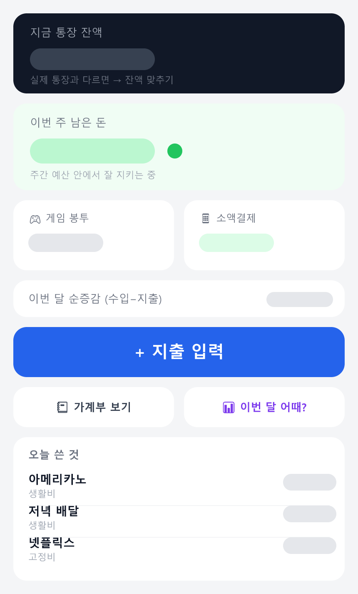
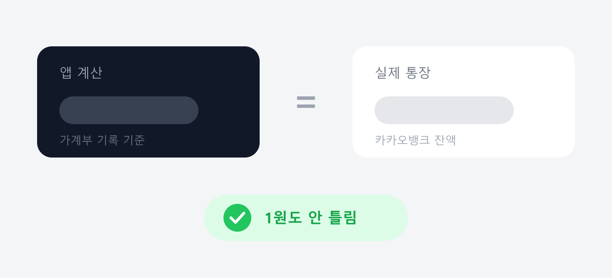

나는 가계부를 며칠 못 간다. 처음 3일은 열심히 적다가, 하루 밀리면 이틀 밀리고, 그러다 그냥 접는다. 몇 번을 반복했는지 모른다. 근데 곰곰이 생각해보니 문제는 의지가 아니라 "귀찮음"이었다. 적는 게 귀찮고, 밀린 걸 몰아 적는 게 더 귀찮고.
그래서 반대로 생각했다. 내가 알아서 기록하는 걸 기대하지 말고, 앱이 나를 먼저 귀찮게 하면 되잖아? 밤마다 "오늘 뭐 썼어?" 하고 콕 찔러주고, 입력은 최대한 짧게. 그렇게 만들기 시작한 게 이 가계부 앱이다. 처음 3일 만에 굴러가는 버전을 만들었고, 그 뒤로 2주 넘게 삽질했다. 그 기록을 남긴다.

제일 신경 쓴 건 "입력을 얼마나 줄이냐"였다. 그래서 한 줄만 툭 던지면 AI가 알아서 항목·금액·분류로 정리해준다. 맞으면 저장, 틀리면 분류만 손으로 바꾸면 끝이다.
| 내가 친 한 줄 | 항목 | 금액 | 분류 |
|---|---|---|---|
| 아메리카노 한 잔 | 아메리카노 | ███ | 생활비 |
| 저녁 배달 | 배달 | ███ | 생활비 |
| 넷플릭스 | 넷플릭스 | ███ | 고정비 |
| 주유 | 주유 | ███ | 생활비 |
분류에는 제일 싼 모델을 붙였다. 한 건당 몇 원 수준이라 한 달 내내 써도 부담이 없다. "이번 달 어때?" 같은 분석은 조금 더 똑똑한 모델을 쓴다.
처음엔 AI가 무조건 정해진 형식(JSON)으로만 답하도록 구조화 출력을 켰다. 근데 결과가 가관이었다. "노래방 삼천원"을 넣으면 항목이 "뷡" 같은 깨진 글자로 나오고, 금액도 뒤죽박죽.
원인은 그 "강제 형식" 기능이었다. 형식을 강제하는 과정에서 한글 글자가 반토막이 나버린 거다. 강제를 끄고 그냥 프롬프트로 "JSON으로만 답해"라고 시킨 뒤 결과를 파싱했더니, 거짓말처럼 멀쩡해졌다.
교훈: 최신 기능이 항상 정답은 아니다. 화려한 옵션 하나 끄니까 품질이 살아났다.
이 앱의 심장은 "밤 9시에 나를 콕 찌르기"다. 근데 이 웹 알림이 제일 애를 먹였다.
테스트 알림 버튼을 눌러도 "전혀 반응 없음". 콘솔에 로그를 잔뜩 심어서 추적해보니, 알림은 정상적으로 오고 있었다. 다만 윈도우가 화면에 띄우지 않고 알림 센터에만 조용히 쌓아두고 있었던 거다. Win + A를 눌러보니 거기 여러 개가 얌전히 쌓여 있었다. 허무했다.
비밀번호 로그인창이 안 뜨는 것도 한참 헤맸다. 알고 보니 로그인 팝업을 띄우는 신호(헤더)에 한글("가계부")을 넣었더니 그 헤더가 깨져서 브라우저가 창을 못 띄운 거였다. 영문으로 바꾸고, 아예 앱 안에 예쁜 로그인 화면을 따로 만들어 해결했다.
교훈: HTTP 헤더엔 영문만. 그리고 "안 온다"고 단정하기 전에 알림 센터부터 열어볼 것.
처음엔 데이터를 브라우저 안에만 저장했다. 혼자 쓰는 앱이니까 그걸로 충분한 줄 알았다. 근데 PC에서 넣은 기록이 폰에서는 안 보였다. 당연했다. 기기마다 저장고가 따로니까.
결국 데이터를 서버(작은 DB)에 저장하도록 갈아엎었다. 그랬더니 PC에서 넣으면 폰에도 바로, 폰에서 넣으면 PC에도 바로 뜬다. 재정 정보라서 겸사겸사 비밀번호도 걸었다. 기기마다 처음 한 번만 넣으면 기억한다.
손 입력도 귀찮으니, 아예 카카오뱅크 거래내역 엑셀을 앱에 자동으로 밀어넣기로 했다. (쿠팡 주문내역 확장 만들 때랑 똑같은 마음이다. 반복되는 짜증은 도구로 없애는 게 낫다.)
그런데 엑셀을 코드로 까보니, 표가 A열이 아니라 B열부터 시작하더라. A열은 그냥 여백이었다. 이 사소한 걸 못 찾아서 "왜 거래가 0건이지?" 하며 한참을 헤맸다. 열 위치 하나 바로잡으니 3개월치가 쭉 들어왔다.
재미있던 건 통장 두 개(마이너스 통장 + 생활 통장)를 합치는 작업이었다. 두 통장 사이에 오간 돈은 "소비"가 아니라 그냥 내 돈이 이쪽에서 저쪽으로 옮겨간 거라, 지출에서 빼줘야 했다. 그렇게 이체를 걷어내고 계산했더니 앱 잔액이 실제 통장이랑 1원도 안 틀리게 맞아떨어졌다. (████████원, 딱 맞음.) 이 맛에 개발한다.

여기까지만 보면 "은행 자동 연동 성공!"으로 끝나야 하는데, 현실은 아니었다. 자동으로 넣고 보니 안 맞는 게 너무 많았다.
은행은 "얼마"는 알아도 "왜 썼는지"는 모른다. 그 맥락은 나만 안다. 그래서 결론은 이렇게 났다 — 자동은 초안, 확정은 사람. 내가 직접 정리한 표를 앱이 그대로 받아들이게 하고, 대신 앱 안에서 분류를 톡 눌러 바로 바꾸거나, 한 건을 둘로 쪼개는 것(담배 + 식비처럼)도 되게 만들었다.
아직 완성은 아니다. 하지만 이제 나는 "메이플 만원" 한 줄이면 기록이 끝나고, 밤 9시가 되면 앱이 먼저 나를 부른다. 통장 잔액도 실제랑 맞고, "이번 주 얼마 남았나"도 한눈에 본다. 무엇보다 — 아직 며칠째 안 밀리고 있다.
가계부는 정확도보다 "안 까먹고 계속 하는 것"이 전부다. 완벽한 자동화보다, 손이 덜 가는 도구가 이긴다. 이번에 다시 한번 배웠다.
반복되는 짜증은 웬만하면 도구로 없애는 게 낫다. 근데 그 도구가 나를 대신해 판단까지 하려 들면, 오히려 손이 더 간다. 자동은 딱 초안까지만.
다음 편에서는 "밤 9시 자동 알림을 서버 시계로 진짜 굴리는 법(배포 편)"이나 "AI한테 내 소비 습관 코치받기"를 다뤄볼까 한다. 필요하거나 궁금한 부분 있으면 알려주면 반영하겠다.
#개발일지 #가계부앱 #AI가계부 #바이브코딩 #1인개발 #PWA #웹푸시알림 #NextJS #ClaudeAPI #카카오뱅크엑셀 #지출관리 #삽질기